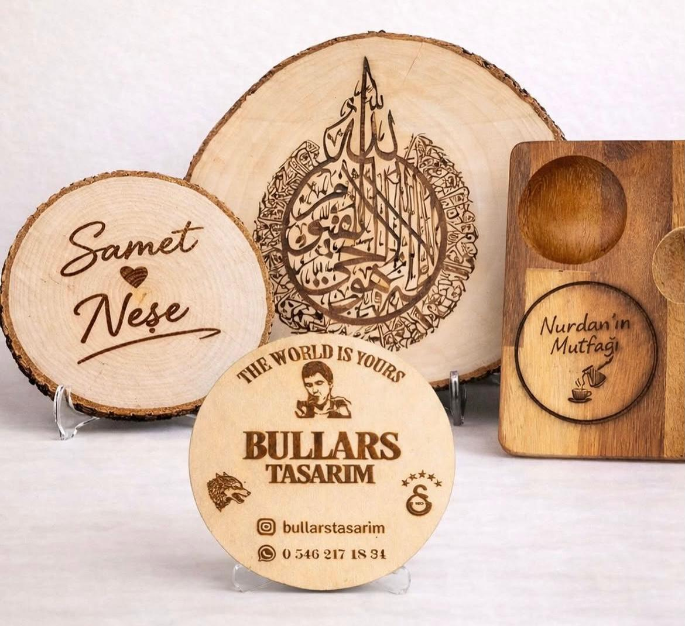
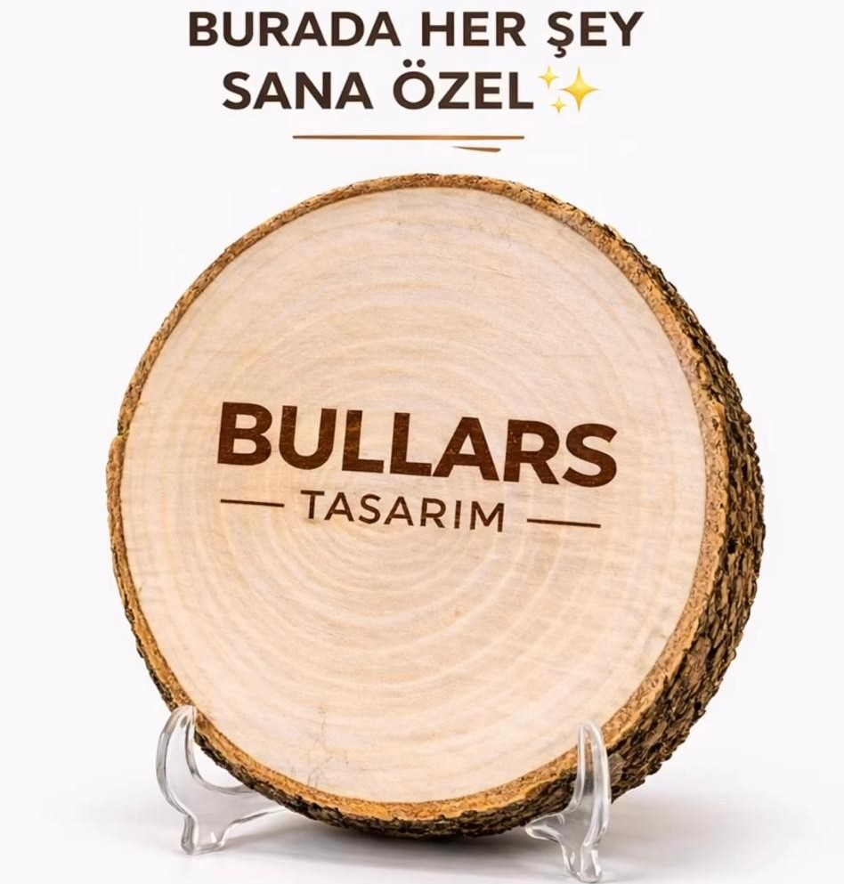
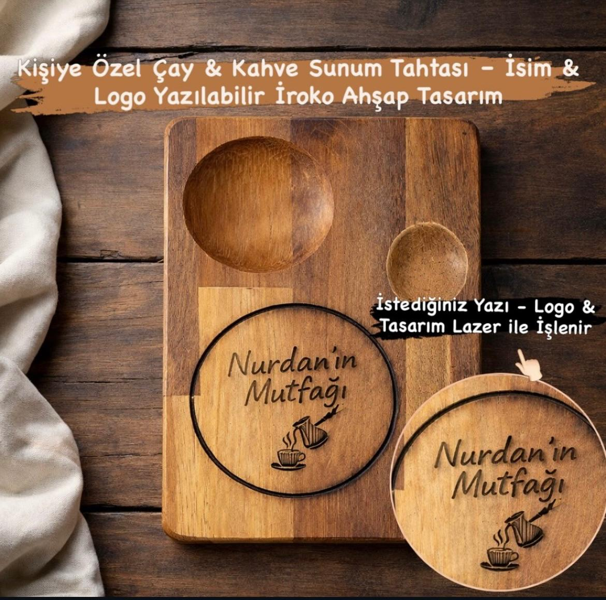

Bullars Tasarım: Kişiye Özel Ahşap Ürünlerde Doğallık, Estetik ve Lazer İşleme Sanatı

Günümüzde insanlar artık sıradan ürünler değil, anlam taşıyan, kişiye özel ve doğal ürünler arıyor. İşte tam bu noktada Bullars Tasarım, doğal ahşabı modern lazer teknolojisiyle buluşturarak eşsiz ve tamamen kişiye özel tasarımlar ortaya çıkarıyor. İstanbul’da bulunan atölyemizde; bambu fotoğraflıklar, doğal ahşap kütük dekorlar, iroko sunum tahtaları, ceviz ağacından kesme tahtaları ve ahşap bardak altlıkları başta olmak üzere geniş bir ürün yelpazesi sunuyoruz. Her ürün sadece bir obje değil; 👉 bir anı, bir hikaye ve bir duygunun yansımasıdır.
🌳 Doğal Ahşap Kütük Ürünler – Benzersiz ve Rustik Dekorasyon
Doğal ağaç kütüğünden üretilen ürünler, her biri farklı damar yapısına sahip olduğu için tamamen benzersizdir. Bullars Tasarım’da üretilen:
- Ahşap kütük tablolar
- İsimli ve tarihli dekor ürünleri
- Fotoğraflı ahşap tasarımlar
özellikle düğün, nişan, söz ve özel gün dekorasyonu için yoğun talep görmektedir. 👉 “Ahşap kütük tablo”, “rustik ahşap dekor”, “isimli ahşap hediye” arayanlar için en özel çözümler burada.

📸 Bambu Fotoğraf Çerçeveleri – Anılarınızı Doğal Şekilde Ölümsüzleştirin
Bambu, hem çevre dostu hem de estetik bir malzemedir. Bullars Tasarım bambu fotoğraf ürünlerinde:
- Tekli ve çift fotoğraflı çerçeveler
- Lazer işleme fotoğraf baskı
- İsim ve tarih ekleme
sunarak anılarınızı ömürlük bir tasarıma dönüştürür. 👉 “Bambu fotoğraf çerçevesi”, “kişiye özel ahşap fotoğraf baskı” gibi aramalarda öne çıkan ürünlerdir.
☕ İroko Ahşap Sunum Tahtaları – Kafeler ve Evler İçin Premium Seçim
İroko ağacı, dayanıklılığı ve suya karşı direnci ile bilinir. Bu nedenle özellikle kahve sunum tahtası, Türk kahvesi sunumu ve kafe & restoran servis ürünleri için en ideal malzemelerden biridir. Bullars Tasarım’da üretilen iroko sunum tahtaları logo baskılı (işletmelere özel), kişiye özel isimli ve yoğun kullanıma uygundur.

🔥 Lazer İşleme Teknolojisi – Silinmez, Kalıcı ve Premium
Bullars Tasarım’ın tüm ürünlerinde kullanılan teknik: 👉 Lazer İşleme Bu teknik sayesinde baskı değil, kazıma yapılır; ürünler silinmez, solma yapmaz ve yıllarca kalıcılığını korur. 👉 Ahşap ile bütünleşen tasarım, ürünü premium seviyeye taşır.
🚀 Neden Bullars Tasarım?
- ✔ %100 doğal ahşap
- ✔ El emeği üretim
- ✔ Kişiye özel tasarım
- ✔ Profesyonel lazer işleme
- ✔ İstanbul merkezli atölye
- ✔ Türkiye geneli gönderim